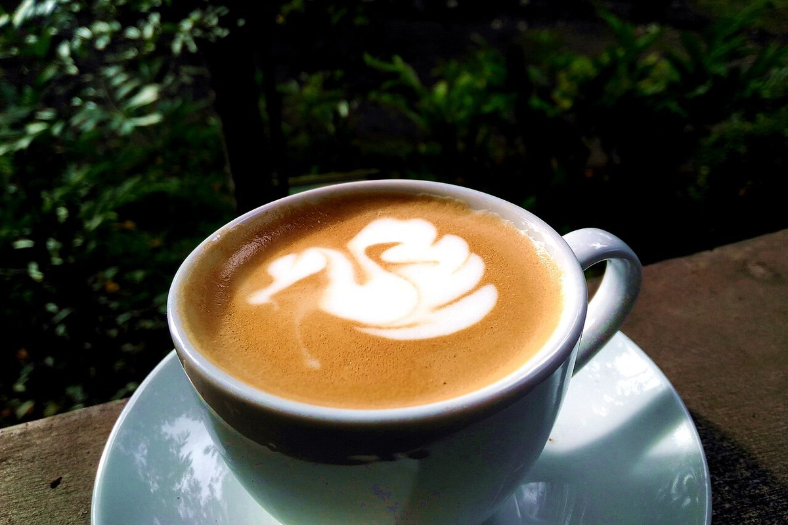
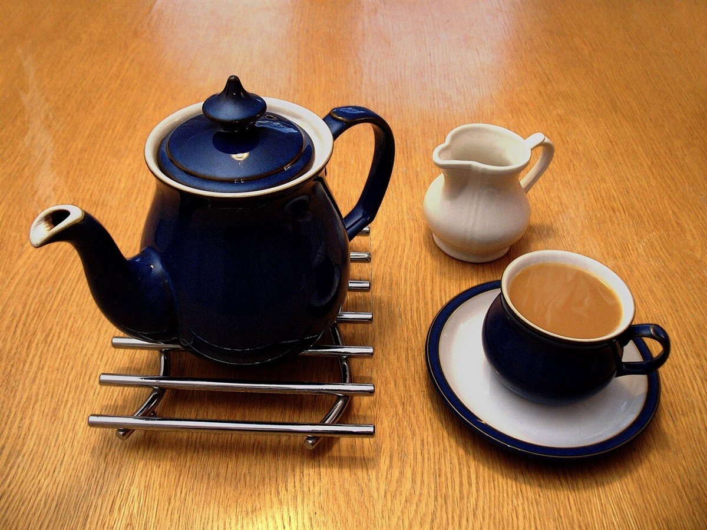

お店について
| 店名 | isakafuro.cafe |
|---|---|
| 業種 | カフェ |
| 住所 | 茨城県日立市宮田町3丁目8-14 |
| 電話 | 0294-21-3369 |
| @isakafuro.cafe | |
| 営業時間 | 準備中(お問い合わせください) |
| 定休日 | 準備中(お問い合わせください) |
| 席数 | 準備中(お問い合わせください) |
| スタッフ | 準備中(お問い合わせください) |
| 駐車場 | 準備中(お問い合わせください) |
| 支払い方法 | 準備中(お問い合わせください) |

制作側の案
見つけやすいページに
訪れる前に知りたい情報を、すぐに見つけられるページにしたい。この試作ページは、そんな考えで作った制作側の案です。
場所、電話番号、Instagramを目立つ位置に置いています。お店から伺った内容ではなく、実際のお店の方針とは異なる場合があります。

掲載の写真はフリー素材のイメージで、お店の実際の様子ではありません。他の地域で撮影されたものや、撮影地が不明なものを含みます。